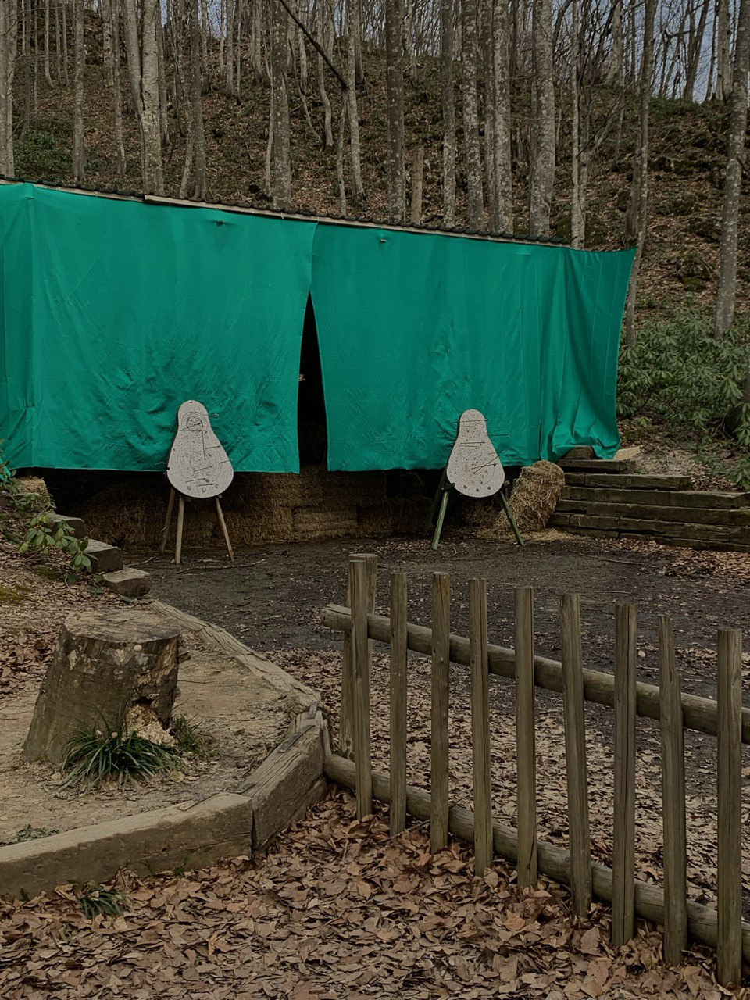
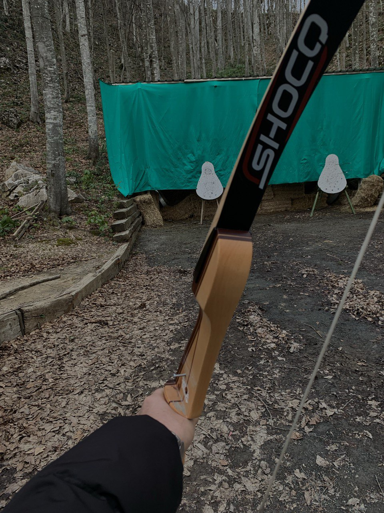
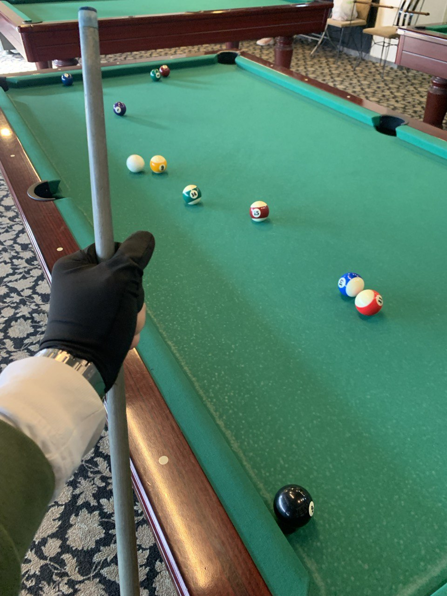
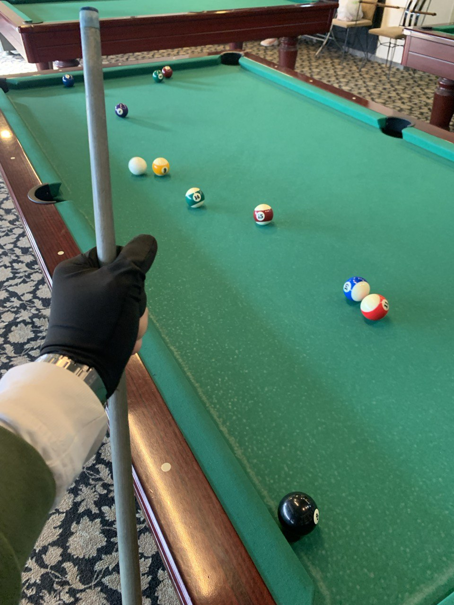

Futbol
Futbol oynamak yerine izlemeyi tercih ediyorum; ancak sıradan seyretmekten ziyade, maçları analiz etmek ve gidişatını tahmin etmek benim için daha keyifli.

Çok fazla spor etkinliğine katılmasam da, az da olsa birçok farklı spor dalını deneme fırsatım oldu. Her ne kadar hepsinde uzmanlaşamamış olsam da, deneyimlemekten ve yeni beceriler öğrenmekten keyif aldım.
Futbol oynamak yerine izlemeyi tercih ediyorum; ancak sıradan seyretmekten ziyade, maçları analiz etmek ve gidişatını tahmin etmek benim için daha keyifli.
Bu spor, fiziksel becerileri geliştirmenin yanı sıra konsantrasyon, sabır ve zihinsel odaklanma gerektirir.
 . Hız, çeviklik, koordinasyon, dayanıklılık ve güç gibi fiziksel özelliklerin yanı sıra, konsantrasyon, takım çalışması, strateji ve hızlı karar verme gibi zihinsel yetenekleri de gerektirir.

.jpg)

takım çalışması, iletişim ve strateji gerektiren bir spordur
Bilardo, stratejik düşünme, el-göz koordinasyonu ve vuruş teknikleri gibi becerileri geliştirmeye yardımcı olur.
 
